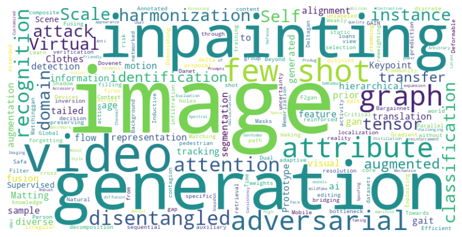
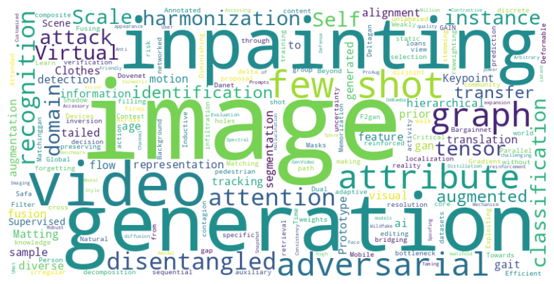

关于我
上海交通大学 电子信息与电气工程学院 清源研究院 助理教授。本科毕业于上海交通大学ACM班，博士毕业于上海交通大学计算机科学与工程系，师从张丽清教授、俞勇教授及赵启斌博士。
研究
我的研究兴趣包括：人工智能 计算机视觉 生成模型 可信模型。详细研究成果与近期工作可参考 Google Scholar 和 近期工作。
课程
联系我
邮箱 c [dot] sis [at] sjtu [dot] edu [dot] cn
上海交通大学 电子信息与电气工程学院 清源研究院 助理教授。本科毕业于上海交通大学ACM班，博士毕业于上海交通大学计算机科学与工程系，师从张丽清教授、俞勇教授及赵启斌博士。
我的研究兴趣包括：人工智能 计算机视觉 生成模型 可信模型。详细研究成果与近期工作可参考 Google Scholar 和 近期工作。
邮箱 c [dot] sis [at] sjtu [dot] edu [dot] cn